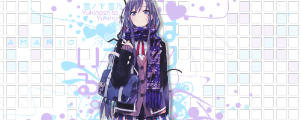

Yukino
Invite bot

Are you an OwO bot ripoff?
Yes
What to do if something goes wrong?
Deal with it bitch
What can you do with this bot?
use /help
What if the bot is offline?
Wait until it isn't
Website Templates
created with
Website Builder Software
.